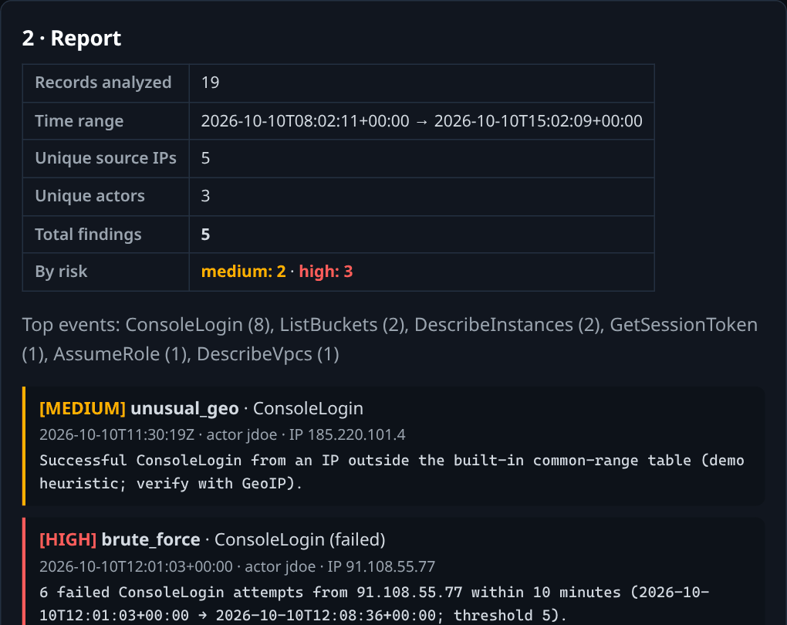

AWS mini-SOC detections
Terraform · CloudTrail · GuardDuty
$ ./hunt --source cisa-kev
Free CISA KEV hunting labs with sample logs and detection scripts. No login, no setup.
It is beginner-to-intermediate SOC practice: hunt checklists, synthetic logs (clean and noisy), and simple reference detections you can read, run and tune.
It isn't proof of job readiness, a certification, or real SOC volume. Every log is generated: a few thousand lines at most, not millions of events from a real network. Passing a lab shows you can do that lab.

Seven hands-on projects. Pick one and open it on GitHub.
Terraform · CloudTrail · GuardDuty
Python CLI · Sigma rules
▶ Try it liveHeaders · SPF/DKIM/DMARC
Entropy · imports · verdict
Six Tier-1 agent skills
VS Code tasks · cron persistence
Checklists · logs · detectors
October 2026 CISA KEV and in-the-wild cases. Each opens its hunt checklist. KEV status last verified 2026-10-24 (catalog version 2026.10.23) against the official CISA feed; an automated job re-checks it weekly.
Every pack has a hunt checklist, a synthetic log and a reference detection script you can run yourself; three also have a noisy log with documented false positives (NOISY_DATA.md). Each checklist lists its sources (CISA KEV, NVD, vendor advisory) and the date it was last verified. Verify commands for every case are in START_HERE.md.
| Hunt pack | CVE / KEV status | Included |
|---|---|---|
| Plex2Shell (Plex Media Server) | CVE-2026-96652 / 96654 / 96655 / 96656 · KEV | checklist · log · detection |
| Bricksforge (WordPress) | CVE-2026-85097 · not in KEV | checklist · log · detection |
| Ivanti Connect Secure | CVE-2026-104935 · KEV | checklist · log · detection |
| Siemens Software Center DLL sideloading | CVE-2026-110936 · KEV | checklist · log · detection |
| Redis RESTORE double-free | CVE-2026-25243 · not in KEV | checklist · log · detection |
| AI agent tool endpoints without auth | CVE-2026-77936 / 75128 / 77932 / 109442 / 109437 · not in KEV | checklist · log · detection |
| M365 app-identity persistence (ConnectWise) | no CVE, not in KEV | checklist · log · detection |
Atlassian :: path traversal | CVE-2026-21589 · KEV | checklist · log · noisy log · detection |
| Nextcloud Collabora CODE server | CVE-2026-110447 · KEV | checklist · log · noisy log · detection |
| BeyondTrust Remote Support auth bypass | CVE-2026-102764 · KEV | checklist · log · noisy log · detection · exercises |
Intel only (all in CISA KEV; no lab, reason recorded): SiteGuard CVE-2026-106931 · PAN-OS CVE-2026-0322 · Microsoft Windows Command Injection Vulnerability (CVE-2026-96951) · Cisco SEG CVE-2026-76519 · Ahsay CVE-2026-105133 / 105134 · Fortinet CVE-2025-61624.
Everything else, folded away. Click to expand.
Problem: SOC analysts need to know how cloud detections actually fire — not just theory.
What it is: A minimal AWS detection stack (VPC → CloudTrail → S3 → GuardDuty → SecurityHub) deployed with Terraform, three adversary-emulation scenarios using Stratus Red Team (verified technique IDs), a triage guide, and blank incident report templates.
Skills: CloudTrail analysisGuardDuty triageIncident response workflowTerraform IaC
Problem: Tier-1 analysts drown in raw CloudTrail logs; simple heuristics catch the obvious badness fast.
What it is: A working CLI tool that parses CloudTrail JSON, flags anomalous logins / failed-login spikes / risky IAM changes, enriches IPs via AbuseIPDB, and emits a Markdown report. Ships with synthetic sample data and a passing pytest suite.
Skills: Python scriptingLog analysisIOC enrichmentDetection heuristics
▶ Try it live in your browser · → 02-python-ioc-analyzer on GitHub
Problem: Phishing triage is daily Tier-1 SOC work — header forensics, auth-result interpretation, URL deobfuscation.
What it is: A full walkthrough of a reconstructed training-sample phish, a header-analysis cheatsheet, a blank analysis report template, and a self-test guide using GoPhish (own mailbox only).
Skills: Email header forensicsSPF/DKIM/DMARCURL analysisPhishing triage
→ 03-phishing-analysis-lab on GitHub
Problem: Powerful binary-analysis tooling exists, but it isn't human-friendly for quick triage.
What it is: A one-command ELF binary triage CLI (triage.py <binary>): section-entropy packing heuristics, W^X detection, suspicious-import watchlist, string IOC extraction, score-based verdict (benign/suspicious/malicious), and a one-page analyst report. Optional REA provider enrichment; degrades honestly without it.
Skills: Static binary analysisELF internalsMalware triage heuristicsDetection engineering
Problem: Agent skill packs exist for software engineering — nothing in them speaks SOC.
What it is: Six agent skills for the Tier-1 analyst loop, each distilled from a working project in this repo: alert-triage, incident-report, cloudtrail-ioc, phishing-analysis, binary-triage, detection-engineering. Each skill declares its trigger, workflow, output contract, and honesty boundaries. MIT licensed, copy-paste installable into any agent's skills directory.
Skills: Detection triageIncident documentationKnowledge distillation
Problem: Supply-chain attacks now target the developer's own workbench — a malicious .vscode/tasks.json can execute code the moment a project folder is opened, and a cron-based backdoor survives deleting the repo files.
What it is: A safe, hands-on supply-chain defense lab built around the GhostAction technique: inert training samples that demonstrate the mechanism with zero malicious behavior, a hunt checklist for the two persistence points (workspace tasks + cron), and a blank incident report template.
Skills: Supply-chain threat modelingEditor config reviewPersistence huntingIncident documentation
→ 06-ghostaction-supply-chain on GitHub
Problem: CISA KEV entries come with a federal deadline, but your network doesn't patch itself — the gap between "KEV published" and "patch deployed" is the hunting window.
What it is: Threat-hunting packs built from the October 2026 CISA KEV additions and same-week in-the-wild cases. Each pack has a hunt checklist, a synthetic log and a reference detection script you can run yourself; KEV status is re-verified weekly against the CISA feed. Verify commands for every case are in START_HERE.md.
Skills: Threat-intel consumptionIOC extractionLog huntingDetection engineeringIncident documentation
⚠ All datasets, log samples, and email artifacts in these projects are synthetic training samples — clearly labeled as such. No real incidents, real logs, or real phishing emails are presented here.
Built hands-on: every attack run, every detection, every report written by the author — nothing fabricated.
The KEV packs start from public reporting on each CISA KEV addition or in-the-wild case. Each pack turns that reporting into a hunt checklist, then (where the repo has one) a synthetic log to hunt in and a reference detection script. Work through the checklist and write your own detection first, then compare it with the reference script.
New to SOC: start with 03 phishing-analysis-lab (offline, no setup), then 02 python-ioc-analyzer or the browser demo.
Practicing detection: pick any KEV hunt pack with a detection script, write your own logic, then run the reference.
Prepping for interviews: the README has resume bullets and a skills matrix. Do one KEV pack end to end so you can talk through a real recent CVE.
Full paths: START_HERE.md.
This kit is small on purpose. When you want real attack telemetry, bigger datasets or graded challenges, these are free (some have paid tiers):
Pair any of them with the soc-skills gap analysis to see which skills you've actually practiced.
Yes. Everything is open source under the MIT license, and nothing needs an account on this site. Only 01 mini-soc needs your own AWS account (START_HERE estimates about $5–15/month; run terraform destroy when you're done). Everything else runs on your laptop or in your browser.
No. All logs, samples, and email artifacts are synthetic training data. The demo and three KEV packs also ship a noisy variant (thousands of lines, benign look-alikes, missing fields) with honest TP/FP numbers, but it's still generated data, not real SOC volume. Logs you paste into the demo are analyzed in your browser and never leave it.
Clone the repo, then follow the "Verify" column in START_HERE.md. For example, the 02 analyzer:
git clone https://github.com/szzxli/soc-home-lab
cd soc-home-lab/02-python-ioc-analyzer
pip install -r requirements.txt && python -m pytest tests/ -v